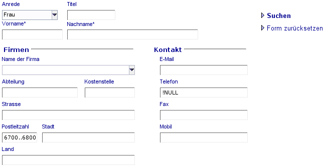

|
QBE Beschreibung Druckansicht |
Query by Example (Suche anhand von Beispielen) erlaubt die Verwendung aller Eingabefelder als Filterkriterium, welche in Folge das Suchergebnis reduzieren.Der Benutzer kann seine Suchkriterien direkt in die Form, mit der er gerade arbeitet, eintragen. Dabei kann er in der gewohnten Umgebung mit den gewohnten Controls arbeiten (Textfelder, Comboboxen).
Im Folgenden werden Suchkriterien für Textfelder, numerische Felder und Datumsfelder erläutert. Insbesondere können in diesen Feldern Schlüsselwörter und Ausdrücke verwendet werden, welche dem versierten Anwender ein Werkzeug in die Hand geben, um leistungsfähige und zielorientierte Suchanfragen zu gestalten.
Allgemeine Schlüsselworte und Ausdrücke können in Textfeldern, numerischen Feldern und Datumsfelder verwendet werden. Diese Schlüsselwörter und Ausdrücke lassen sich auch miteinander kombinieren.
Das Schlüsselwort NULL (oder null) wird verwendet um ein leeres Feld zu identifizieren.
Beispiel:
Suche alle Personen, welche keine E-Mail Adresse eingetragen haben.
Ein logischen NICHT wird durch das Zeichen ! repräsentiert.
Beispiel:
Suche alle Benutzer, welche eine E-Mail Adresse eingetragen haben.
Anmerkung: An diesem Beispiel ist auch sehr schön zu sehen, dass NULL und ! kombiniert wurden. Man kann so sehr einfach nach nicht leeren Feldern suchen.
Das logische ODER wird durch das Zeichen | repräsentiert.
Beispiel:
Suche alle Benutzer, welche Meier oder Maier im Nachnamen haben.
Ein logisches UND wird durch das Zeichen & repräsentiert.
Beispiel:
Suche alle Benutzer, welche John im Namen enthalten UND nicht Johnson
Diese werden durch die Zeichen >, >=, < ,<= repräsentiert.
Beispiel:
Suche alle Benutzer bei welchen die Postleitzahl kleiner 6800 ist.
Beispiel:
Suche alle Benutzer bei welchen die Postleitzahl kleiner 6800 oder größer 7000 ist.
Diese Schlüsselworte und Ausdrücke können nur in Textfeldern verwendet werden. Eine Kombination mit den allgemeinen Schlüsselworten und Ausdrücken ist auch hier möglich.
Ein führendes = Zeichen wird verwendet um eine exakte Übereinstimmung mit dem Suchbegriff zu erzwingen.
Beispiel:
Finde alle Benutzer welche Andrea heißen (aber nicht Andreas,....).
Das ? Zeichen wird als Platzhalter für ein beliebiges Zeichen verwendet, wobei das * Zeichen als Platzhalter für eine beliebige Anzahl (0-n) von Zeichen dient.
Beispiel:
Finde alle Benutzer bei denen die E-Mail Adresse @google. enthält und mit 2 Zeichen endet. z.B. test@google.de oder test@google.at. Ungültig sind z.B. test@google.com, da diese nach dem Punkt mit 3 Zeichen enden.
Ein führendes ^ Zeichen wird verwendet um das Suchkriterium links ausgerichtet zu erzwingen, wobei ein angehängtes $ Zeichen eine Rechtsausrichtung erzwingt.
Beispiele:
Finde alle Personen bei denen der Vorname mit Chris beginnt.
Finde alle Benutzer, welche eine .com E-Mail Adresse haben.
Da die Zeichen |, & und ! als in Ausdrücken Verwendung finden, hat man auf den ersten Blick nicht die Möglichkeit nach Begriffen wie z.B. den Firmennamen âRohde & Schwarzâ zu suchen, da das Zeichen & als QBE Ausdruck bewertet wird. Zu diesem Zweck wurde eine sogenanntes Escape-Zeichen eingeführt: Das doppelte Anführungszeichen.
Beispiele:
Suche alle Benutzer, welche bei der Firma Rohde & Schwarz angestellt sind.
Schlüsselworte und Ausdrücke für Zahlen- und Datumsfelder
Intervalle
Intervalle können nur in Zahlen- und Datumsfelder verwendet werden. eine Kombination mit den normalen Schlüsselwörtern und Ausdrücken ist auch hier möglich. Ein Intervall wird durch zwei Punkte (..) ausgedrückt.
Beispiel:
Finde alle Benutzer, welche in dem Postleitzahlgebiet 6800 bis 6900 wohnen.
Anmerkung: Man könnte auch nach allen Benutzern fragen, welche zwischen dem 1.1.1960 und dem 31.12.1970 geboren wurden: 01.01.1960..31.12.1970
Diese können nur für Datums- und Zeitstempelfelder (Datum + Uhrzeit) verwendet werden. Selbstverständlich können auch diese mit den normalen QBE Schlüsselwörter und Ausdrücken kombiniert werden.
Das Schlüsselwort TODAY (oder today) repräsentiert den heutigen Tag.
Beispiel:
Finde alle Aufgaben, welche genau heute erledigt werden müssen.
Finde alle Aufgaben, welche in der Vergangenheit hätten erledigt werden müssen.
NOW
Das Schlüsselwort NOW repräsentiert den heutigen Tag und Uhrzeit.
Beispiel:
Finde alle Aufgaben, welche innerhalb der letzten 24 Stunden hätten erledigt werden müssen.
Sehr schön ist auch hier zu sehen wie das Schlüsselwort NOW mit dem Intervall (..) und einer Rechenoperation (-1d) kombiniert wurde.
Das Schlüsselwort THISY (oder thisy) wird verwendet um das aktuelle Jahr zu repräsentieren. Dies entspricht dem Zeitraum (Interval) vom 1. Januar bis zum 31 Dezember.
Das Schlüsselwort THISQ (oder thisq) wird verwendet um das aktuelle Quartal zu repräsentieren. Z.B. wenn heute der 4. Mai ist, beschreibt THISQ den Zeitraum vom 1. April bis zum 30. Juni des aktuellen Jahres.
Das Schlüsselwort THISM (oder thism) wird verwendet um den aktuellen Monat zu repräsentieren. Z.B. wenn heute der 4. Mai ist, beschreibt THISM den Zeitraum vom 1. Mai bis zum 31. Mai des aktuellen Jahres.
Das Schlüsselwort THISW (oder thisw) wird verwendet um die aktuelle Woche zu repräsentieren. Bei deutscher Anwendungseinstellung (Locale Setting) beginnt die Woche mit einem Montag und endet mit dem darauf folgenden Sonntag.
Beispiel:
Finde alle Aufgaben, welche nächste Woche erledigt werden müssen.
Das Schlüsselwort YTD (oder ytd) wird verwendet um den Zeitraum vom Anfang des aktuellen Jahres bis einschließlich heute zu repräsentieren.
Das Schlüsselwort QTD (oder qtd) wird verwendet um den Zeitraum vom Anfang des aktuellen Quartals bis einschließlich heute zu repräsentieren.
Das Schlüsselwort MTD (oder mtd) wird verwendet um den Zeitraum vom Anfang des aktuellen Monats bis einschließlich heute zu repräsentieren.
Das Schlüsselwort WTD (oder wtd) wird verwendet um den Zeitraum vom Anfang der aktuellen Woche bis einschließlich heute zu repräsentieren. Anmerkung: Was ist Anfang der Woche? Leider ist der Anfang der Woche nicht in allen Ländern gleich. In manchen Länder (z.B. USA) beginnt die Woche an einem Sonntag. Somit ist dieses Schlüsselwort abhängig mit welcher Sprache sie sich am System anmelden.
Das Schlüsselwort WEEK (oder week) kombiniert mit einer Zahl wird verwendet um eine bestimmte Kalendarwoche des aktuellen Jahr darzustellen. Achtung: In den USA beginnt ein Woche mit einem Sonntag und die erste Kalenderwoche im Jahr beinhaltet immer den 1. Januar. In Europa gilt dagegen die ISO-Norm 8601: Die Woche beginnt mit dem Montag und die 1. Kalenderwoche hat mindestens vier Tage im aktuellen Jahr.
Selbstverständlich lassen sich alle Suchkriterien in mehreren Feldern miteinander kombinieren.
Beispiel:
Wir wollen für eine Telefonmarketingaktion alle Personen finden, welche eine Telefonnummer eingetragen haben und deren Firmensitz in dem Postleitzahlengebiet 6700-6800 liegt. Desweiteren sind nur alle weiblichen Personen interessant, da wir ein gewisse Zielgruppe ansprechen wollen.
